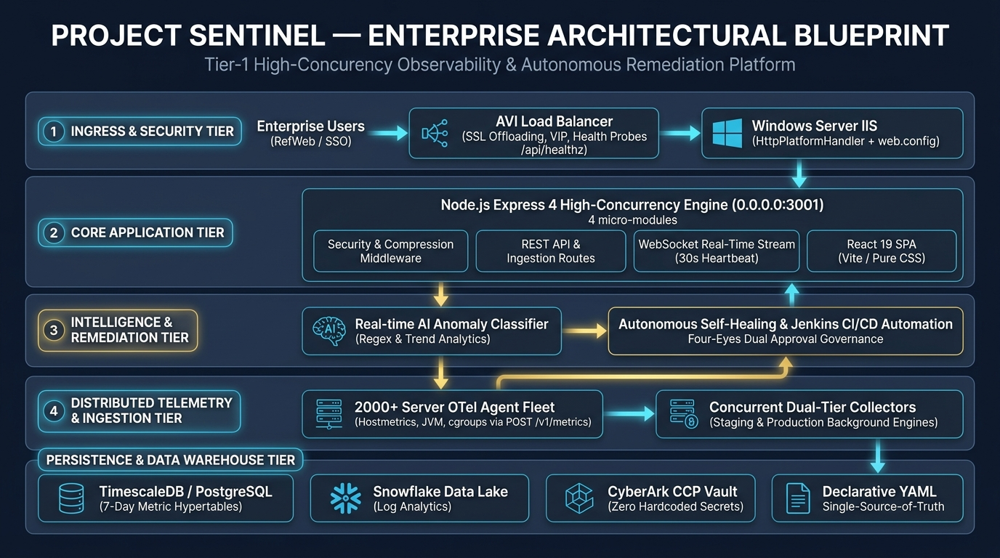
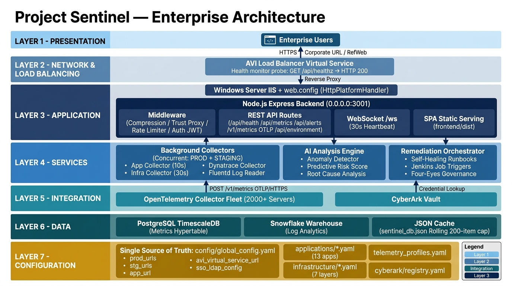
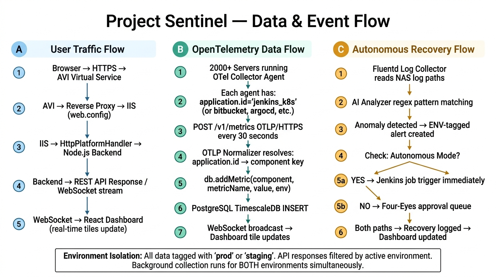

1. 🌟 Executive Architectural Blueprint
High-level enterprise blueprint organizing the framework into 5 illuminated tiers: Ingress & Security, Core Application, Intelligence & Remediation, Distributed 2,000+ Node Fleet Ingestion, and Persistence.

2. 🏗️ 7-Tier Enterprise Topology
Comprehensive layer breakdown from end-user presentation to declarative GitOps configuration.

| Tier |
Name |
Technology Stack |
Key Responsibilities |
| 1 |
Presentation Tier |
React 19 SPA, Vite, Pure CSS |
Dark/Light mode, multi-timezone clocks, relative /api endpoints. |
| 2 |
Ingress & VIP Tier |
AVI Virtual Service, IIS ARR |
SSL Offloading, GET /api/healthz probe, HttpPlatformHandler. |
| 3 |
Application Tier |
Express 4 (0.0.0.0:3001), WebSockets |
trust proxy, Gzip compression, rate limits, 30s WS heartbeat. |
| 4 |
Services & AI Tier |
Async Coordinator, Regex AI Classifier |
Concurrent Dual-Collection (prod + staging); Four-Eyes Dual Approval. |
| 5 |
Ingestion & Vault Tier |
OTLP HTTP Ingest (POST /v1/metrics) |
Passive ingest from 2,000+ server agents; CyberArk CCP vault lookups. |
| 6 |
Persistence Tier |
TimescaleDB, Snowflake, JSON DB |
7-day partitioned hypertables; environment-segregated cache; 200-item cap. |
| 7 |
Configuration Tier |
config/global_config.yaml |
Single Source of Truth; zero hardcoded IPs; Bitbucket PR GitOps sync. |
3. 🔄 End-to-End Data & Event Execution Flows
Process execution paths across User Traffic, OpenTelemetry Fleet Ingestion, and Autonomous Recovery.

Path A: User Traffic & WebSockets Interaction
sequenceDiagram
autonumber
actor User as Enterprise User
participant AVI as AVI Virtual Service
participant IIS as Windows Server IIS (web.config)
participant EXP as Express Backend (0.0.0.0:3001)
participant WS as WebSocket Server (/ws)
participant UI as React 19 Dashboard
User->>AVI: HTTPS GET https://sentinel-observability.internal.corp
AVI->>IIS: Reverse Proxy forward to port 3001
IIS->>EXP: HttpPlatformHandler dispatches request
EXP->>UI: Serve compiled SPA (frontend/dist)
UI->>WS: Establish wss://HOST/ws connection
EXP->>WS: Start 30s Ping/Pong Heartbeat
WS-->>UI: Push 'init' payload
Path B: 2,000+ Node OpenTelemetry Ingestion Flow
sequenceDiagram
autonumber
participant Server as 2,000+ Servers (Linux / Win / K8s)
participant OTel as Local OTel Collector Agent
participant Ingest as POST /v1/metrics (Sentinel API)
participant Norm as otlp_metric_normalizer.js
participant DB as db.js (ENV-Isolated Cache)
participant PG as PostgreSQL (TimescaleDB)
participant WS as WebSocket Broadcast
participant UI as Application Dashboard Tile
Server->>OTel: Collect system.cpu, jvm.memory, cgroups
OTel->>Ingest: POST /v1/metrics (every 30s)
Ingest->>Norm: normalizeOtlpPayload(payload)
Norm-->>Ingest: Normalized metric batch
Ingest->>DB: db.addMetric("jenkins_k8s", "cpu", 67.4, "prod")
Ingest->>PG: INSERT INTO metrics
Ingest-->>OTel: HTTP 200 { status: "SUCCESS" }
DB->>WS: broadcastStateChange()
WS->>UI: Live tick updates Jenkins Tile
Path C: AI Anomaly Detection & Autonomous Recovery Flow
sequenceDiagram
autonumber
participant Log as Fluentd Log Collector
participant AI as real_analyzer.js
participant DB as db.js Alerts Store
participant Gov as Four-Eyes Approval Queue
participant Rec as recovery.js Orchestrator
participant Jen as Jenkins CI/CD Webhook
Log->>AI: analyzeServerLogs(rawLogs, env="prod")
AI->>DB: db.addAlert({component:"jenkins_k8s", severity:"Critical"})
AI->>Rec: triggerRecovery("jenkins_k8s", reason, "prod")
alt Autonomous Mode = ON
Rec->>Jen: POST /job/JOB_RESTART_JENKINS_SERVICE/build
else Four-Eyes Governance Mode = ON
Rec->>Gov: Create pending approval record
Gov->>Jen: Execute after 2 dual sign-offs
end
4. 🌍 Dual-Environment Segregation Architecture
Demonstrates how the backend continuously collects for both prod and staging simultaneously, while filtering UI views based on the user's active environment selection.
flowchart TD
BTN["User Clicks: PROD | STAGING | DEMO"] --> SW["POST /api/environment\nruntimeEnvironment = 'prod'"]
LOOP["collector_coordinator.js\nContinuous Dual Loop for ['staging', 'prod']"] --> P_COL["Collect Prod Telemetry"] & S_COL["Collect Staging Telemetry"]
P_COL --> M_PROD["db.metrics.prod [ ]"]
S_COL --> M_STG["db.metrics.staging [ ]"]
SW --> R_PROD["GET /api/health?env=prod ──► Serves ONLY prod metrics"]
M_PROD --> R_PROD
R_PROD --> R_DNA["No data for component in env ──► Displays 'Data Not Available'"]
5. 🛡️ Security & Vault Governance Architecture
flowchart TD
LDAP["eLDAP / Active Directory Bind"] --> JWT["Signed JWT Token"] --> RBAC["RBAC Roles"]
REG["registry.yaml"] --> CCP["CyberArk CCP Vault"] --> CACHE["Sub-5ms Cache (91.5% Hit Rate)"]
RBAC --> FE["Four-Eyes Dual Approval Queue"] --> AUDIT["Immutable Audit Log"]